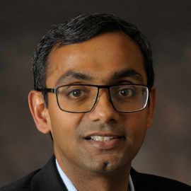
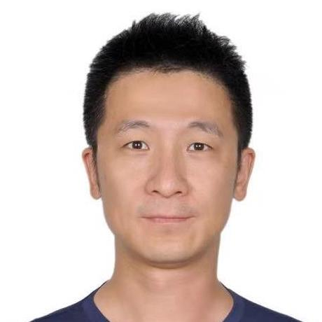
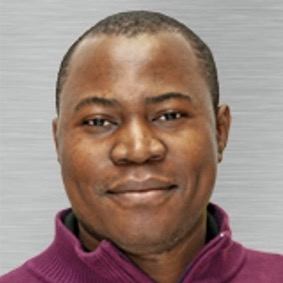
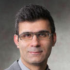

Doctoral Symposium Program
Monday Oct 31 (all times are in ET).
8:30 - 8:35 am
Welcome and Introduction (Hadi & Zheng)
8:35 - 9:30 am
Keynote: “From Padawan to Jedi Knight: The Nine Trials of a PhD Student” (Karthik Pattabiraman)
9:30 - 10:30 am
Student Presentations (40 minutes presentations + 20 minutes Feedback)
- Diaeddin Rimawi: "Green Resilience of Cyber-Physical Systems"
- Tiancheng Li: "AgentFuzz: Fuzzing for Deep Reinforcement Learning Systems"
- Sushovan Bhadra: "A Stochastic Petri net Model of Continuous Integration and Continuous Delivery"
- Lukáš Černý: "Towards automatic validation of composite heterogeneous systems in edge situations"
10:30 - 10:45 am
Break
10:45 - 11:30 am
Panel (Moderator: Hadi Hemmati - Associate Professor York University, Canada)
- Foutse Khomh, Professor, École Polytechnique de Montréal, Canada
- Fuqun Huang, PhD, Researcher at Centre for Informatics and Systems, University of Coimbra, Portugal
- Jianwen Xiang, Professor, Wuhan University of Technology, China
- Lei Ma, Associate Professor, University of Alberta, Canada
- Zheng Zheng, Professor, Beihang University, China
11:30 am - 12:10 pm
Networking with the panelists
12:10 - 12:15 pm
Closing (Hadi & Zheng)

Karthik Pattabiraman
Title: From Padawan to Jedi Knight: The Nine Trials of a PhD Student
Abstract: In the Star Wars Universe, a new trainee or a Padawan needs to undergo rigorous training, and go through various trials in order to obtain the rank of a Jedi Knight, or one who is a member of the Jedi order. In this talk, I'll point out the similarities between the training of a Jedi knight and that of a PhD student. Specifically, I'll discuss the nine trials/stages of a PhD student that mirror the trials in the training of Jedis: teamwork, isolation, fear, anger, betrayal, focus, instinct, forgiveness, and protection. I'll then share some tips and lessons on how to pass these trials successfully, and become a true Jedi warrior ... I mean, graduate with a PhD. Along the way, I'll narrate some stories and share my own experiences (both positive and negative).
Bio: Karthik Pattabiraman is a Professor of Electrical and Computer Engineering at the University of British Columbia (UBC). He received his MS and PhD in computer science from the University of Illinois at Urbana Champaign (UIUC) in 2004 and 2009, and spent a postdoctoral year at Microsoft Research (MSR), Redmond before joining UBC in 2010. His research interests are in dependability, security, and software engineering. Karthik has won multiple awards such as the Inaugural Rising Star in Dependability Award, 2020, from the IEEE and the IFIP, the distinguished alumnus award from the University of Illinois (UIUC), CS department, 2018, and multiple UBC-wide awards for excellence in research and mentoring. Together with his students and collaborators, he has published over 100 papers, many of which have received distinguished paper awards at venues such as DSN and ICSE. He is a senior member of the IEEE, a distinguished member of the ACM, and the vice-chair of the IFIP Working Group on dependable computing and fault-tolerance (WG 10.4). A more detailed biography may found at: https://blogs.ubc.ca/karthik/about/full-bio/
Lei Ma
Bio: Lei Ma is currently an Associate Professor with shared appointments between (1) University of Alberta, Canada and (2) Kyushu University, Japan. He is also honorably selected as a Canada CIFAR AI Chair and Fellow at Alberta Machine Intelligence Institute (Amii). Previously, he received the B.E. degree from Shanghai Jiao Tong University, Shanghai, China, and the M.E. and Ph.D. degrees from The University of Tokyo, Tokyo, Japan. His recent research centers around the interdisciplinary fields of software engineering (SE) and trustworthy artificial intelligence (AI) with a special focus on the quality, reliability, safety and security assurance of machine learning and AI Systems. For more detailed information, please visit the website, https://www.malei.xyz
Fuqun Huang
Bio: Fuqun Huang is currently a Researcher and Invited Assistant Professor at Centre for Informatics and Systems of University of Coimbra, where she leads the research group on “Human Errors in Software Engineering” (HESE) and gives the first university course in HESE to master students in the University of Coimbra. Dr. Huang is the Founder for Institute of Interdisciplinary Scientists, a Federal 501(c)(3) non-profit research institute located at Seattle, where she initiated the “Software Engineering & Psychology” Interdisciplinary Research Program (since 2016), dedicated to defend against software defects through a deep understanding of the psychological mechanisms of how software practitioners commit human errors. See more at: https://www.cisuc.uc.pt/en/people/f-huang
Jianwen Xiang
Bio: Jianwen Xiang is a full professor and associate dean of School of Computer Science and Artificial Intelligence of Wuhan University of Technology (WUT), China. He received his PhD degree from Japan Advanced Institute of Science and Technology in 2005, and worked at National Insitute of Advanced Industrial Science and Technology and NEC Corporation before joining WUT in 2014. His research interests include reliability engineering and network security. He was General Chair of ISSRE 2021. See more at: http://www.wut-dscl.cn/JianwenXiang.html

Zheng Zheng
Bio: Zheng Zheng is a full professor at Beihang University and the deputy dean of School of Automation Science and Electrical Engineering. His research work is primarily concerned with software reliability and testing. Recently, He is co-author of over 100 journal and conference publications, including IEEE TDSC, IEEE TIFS, IEEE TSE, IEEE TR, IEEE TSC, JSS and so on. He serves for IEEE PRDC2019, IEEE DASC 2019, IEEE ISSRE 2020, IEEE QRS 2021 as PC Co-Chairs, as well as WoSAR 2019, DeIS 2020 and DeIS 2021 as General Co-Chairs. He is Editor-in-chief of Atlantis Highlights in Engineering (Springer Nature), Associate Editor of IEEE TRel (2021- ), Elesvier KBS (2018- ) and Springer IJCIS (2012- ) and Guest Editor of IEEE TDSC (2021). He is IEEE Senior Member and IEEE CIS Emerging Technologies TC member. See more at: http://zhengzheng.buaa.edu.cn/

Foutse Khomh
Bio: Foutse Khomh is a Full Professor of Software Engineering at Polytechnique Montréal, Canada CIFAR AI Chair on Trustworthy Machine Learning Software Systems, and FRQ-IVADO Research Chair on Software Quality Assurance for Machine Learning Applications. He received a Ph.D. in Software Engineering from the University of Montreal in 2011, with the Award of Excellence. He also received a CS-Can/Info-Can Outstanding Young Computer Science Researcher Prize for 2019. His research interests include software maintenance and evolution, machine learning systems engineering, cloud engineering, and dependable and trustworthy ML/AI. His work has received four ten-year Most Influential Paper (MIP) Awards, and six Best/Distinguished Paper Awards. He also served on the steering committee of SANER (chair), MSR, PROMISE, ICPC (chair), and ICSME (vice-chair). He initiated and co-organized the Software Engineering for Machine Learning Applications (SEMLA) symposium and the RELENG (Release Engineering) workshop series. He is co-founder of the NSERC CREATE SE4AI: A Training Program on the Development, Deployment, and Servicing of Artificial Intelligence-based Software Systems, and one of the Principal Investigators of the DEpendable Explainable Learning (DEEL) project. He is on the editorial board of multiple international software engineering journals and is a Senior Member of IEEE. See more at: http://www.khomh.net/

Dr. Hadi Hemmati
Bio: Dr. Hadi Hemmati is an associate professor at the electrical engineering and computer science department, at York university. Previously he was an associate professor at the electrical and software engineering department at university of Calgary, AB, Canada. In the past, he was also an assistant professor at university of Manitoba, a postdoctoral fellow at university of Waterloo, and Queen's university. He received his PhD from university of Oslo, Norway. His main research interests are automated software engineering (with a focus on software testing, debugging, and repair), and trustworthy AI (with a focus on robustness and explainabilty). His research has a strong focus on pragmatic software/ML solutions for large scale systems and empirically investigating them in practice. He has been a PI on multiple industry research projects in different domains such as IT, aviation, insurance, urban development, fintech, and beyond. See more at: https://lassonde.yorku.ca/users/hhemmati